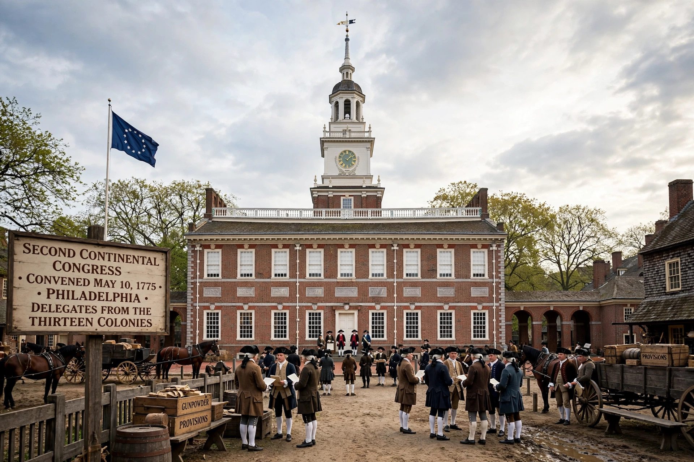

| Type | Unicameral congress of delegates |
|---|---|
| First Congress | 1774, Philadelphia |
| Second Congress | 1775–1781 |
| Confederation Congress | 1781–1789 |
| First president | Peyton Randolph |
| Succeeded by | United States Congress (1789) |
The Continental Congress was a series of legislative bodies, with some executive function, for the Thirteen Colonies of Great Britain in North America, and then for the newly declared United States, between 1774 and 1789. It organised colonial resistance to British policy, conducted the American Revolutionary War, declared independence, and governed the United States under the Articles of Confederation until replaced by the Congress created by the Constitution.
Convened at Carpenters' Hall in Philadelphia in September 1774 in response to the Intolerable Acts, the First Congress brought together 56 delegates from twelve colonies (Georgia did not attend). With Peyton Randolph as president, it adopted a Declaration and Resolves asserting colonial rights, created the Continental Association to enforce a boycott of British goods, and petitioned King George III for redress. It adjourned after agreeing to meet again if grievances were not resolved.
The Second Congress assembled in May 1775, after fighting had begun at Lexington and Concord. Acting as a de facto national government, it created the Continental Army and appointed George Washington as commander-in-chief, issued currency, conducted diplomacy, and sought foreign assistance. On 2 July 1776 it voted for independence, adopting the Declaration of Independence on 4 July; its most famous president was John Hancock, whose signature heads the document. In 1777 Congress approved the Articles of Confederation, which took effect in 1781 after ratification by all thirteen states, transforming Congress into the Congress of the Confederation.
The Confederation Congress governed a loose union of sovereign states but lacked powers to tax or regulate commerce, weaknesses dramatised by post-war debt, interstate disputes, and Shays's Rebellion (1786–87). Its notable achievements included the Land Ordinance of 1785 and the Northwest Ordinance of 1787, which organised westward settlement and prohibited slavery in the Northwest Territory. Following the Constitutional Convention of 1787, Congress transmitted the proposed Constitution to the states; after ratification, the Confederation Congress set the timetable for the new government and expired in 1789.
From Wikipedia, the free encyclopedia.